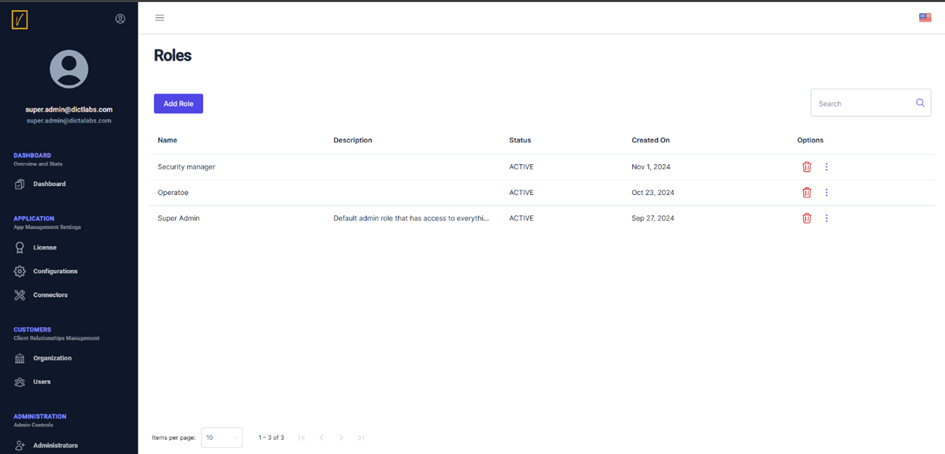
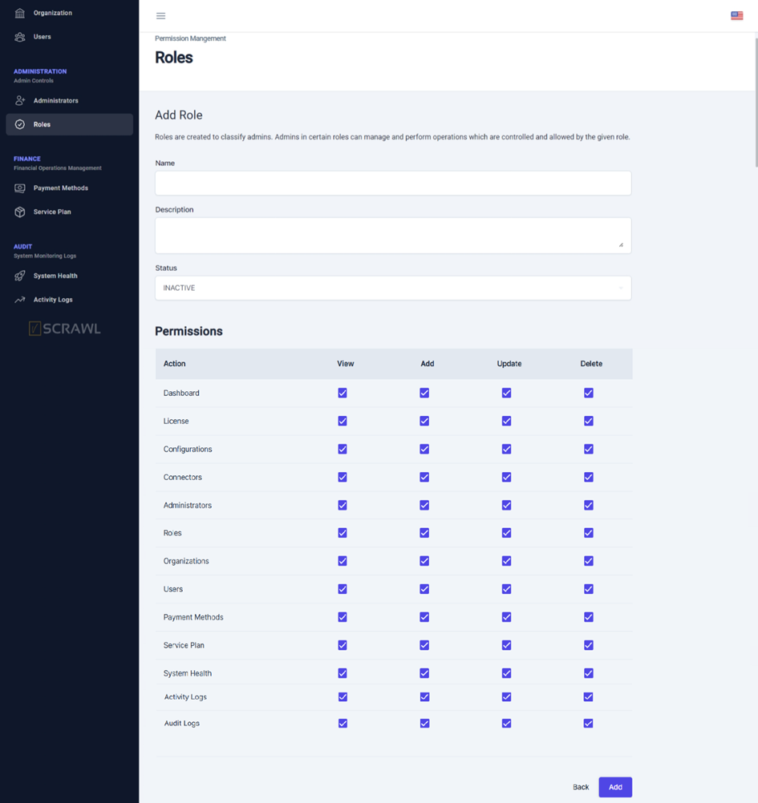

Create a New Role
Access the Roles Page
From the left navigation pane, click on Roles to see a list of roles.
- You can delete an existing role or modify it by clicking the three dots next to the role and selecting Update Role.

Add a New Role
Click on Add Role to create a new role using the screen shown below.

Define Role Details
- Assign the new role a name and description.
- Set the role's status to Active.
- Configure permissions by selecting the relevant checkboxes to allow View, Add, Update, or Delete operations for specific modules.
Tip: You can create roles with access limited to specific modules. For example, a role might only administer certain modules, depending on business requirements.
Avoid Faulty Configurations
While creating a new role, ensure proper configurations:
- Do not allow Add, Update, or Delete access to a module without also providing Read access.
- Such configurations can result in errors and must be avoided.